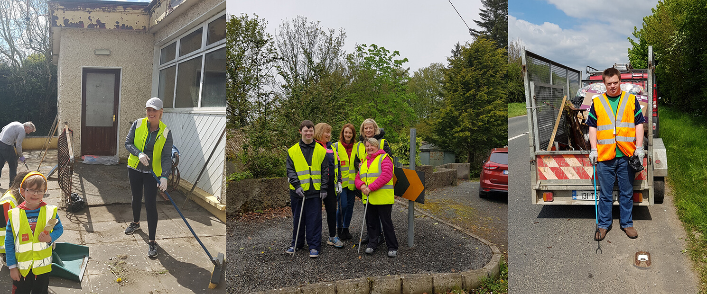
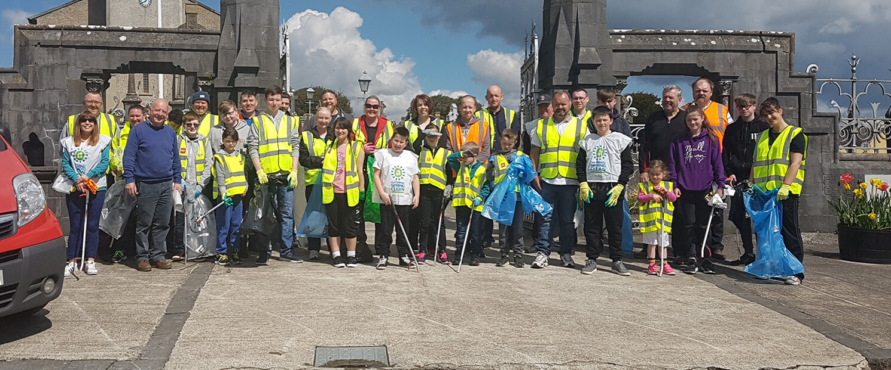
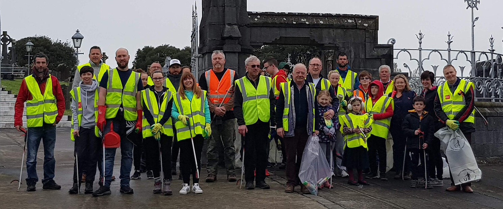
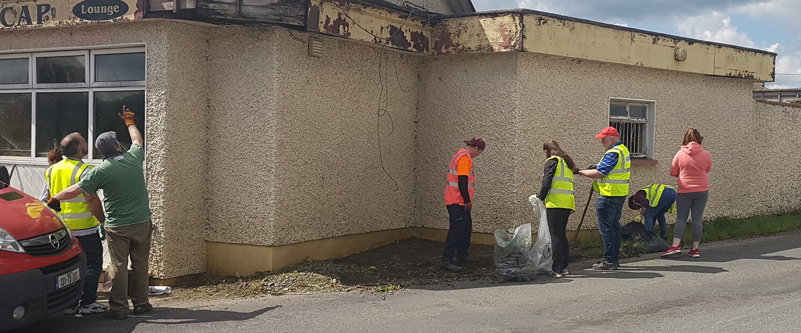
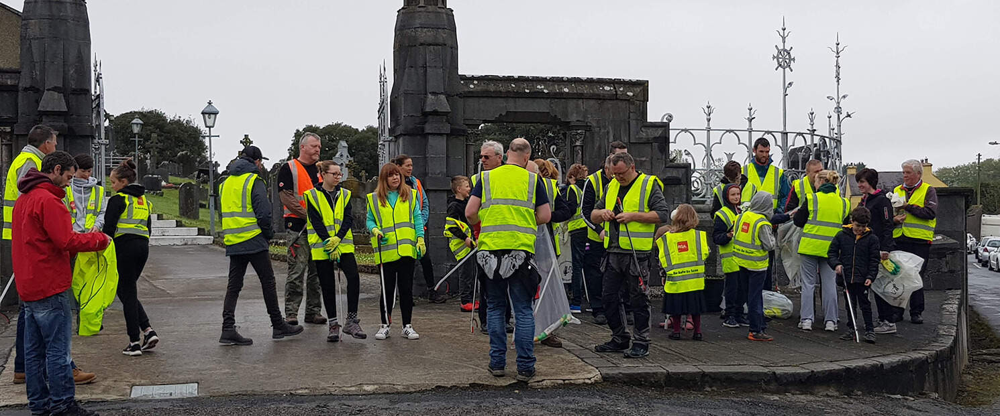
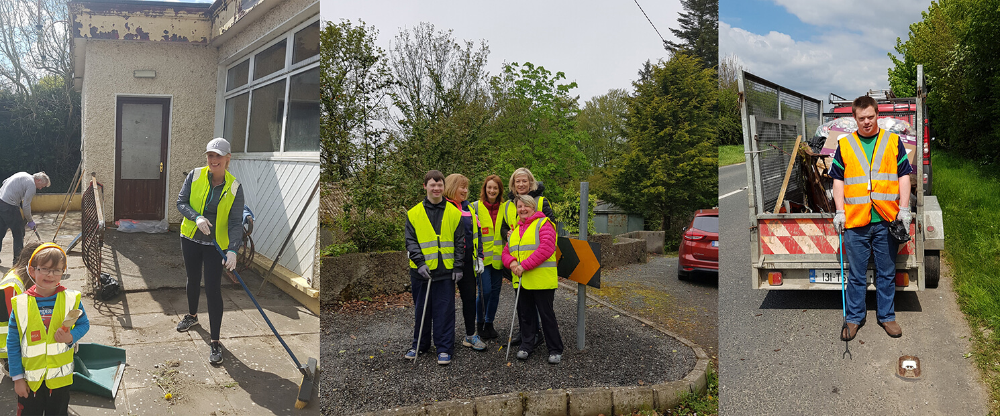
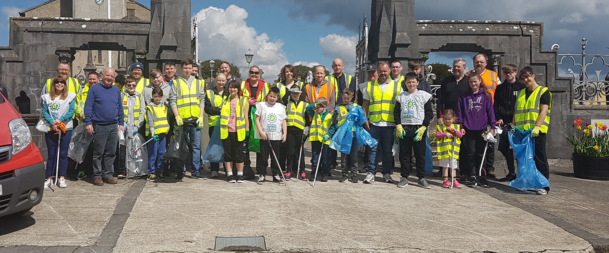
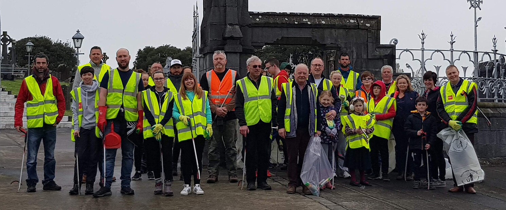
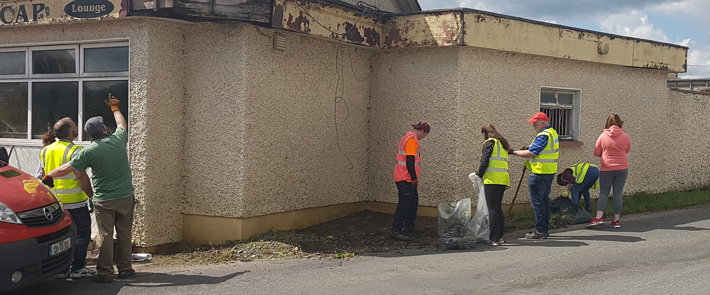
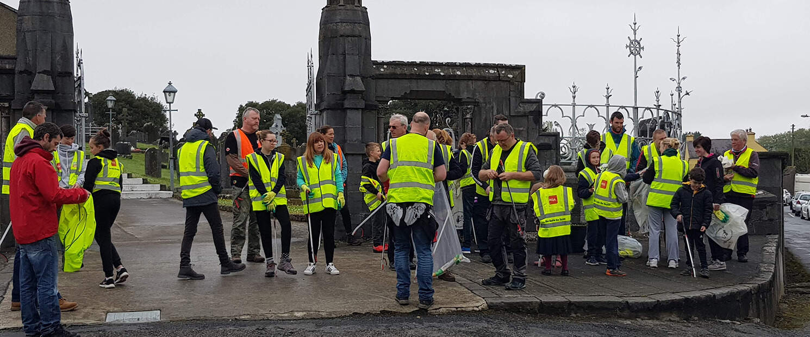

Welcome to the
We are a community based clean up group based in Kilmacow, South Kilkenny
The Kilmacow Community Clean up group began in 2009 as a response to the litter being dumped along the roadside of the village and surrounding areas. It started with two community members gathering litter on their daily walk. Over the years the group grew in members and eventually evolved into an annual clean up event open to all members of community. Today, the KCC organises multiple events and activities throughout the year including, the annual spring clean, flower planting days, painting days, river cleaning days and mini projects.
The KCC has no formal committee or membership, we consider everyone who participates in anyway as equals. The KCC prides itself on its goals of inclusion and participation for as many community members from as many diverse backgrounds as possible. All events we organise are open to all members of the community, and we welcome new participants at all events.
The efforts of the Kilmacow Community Clean up group has helped the village gain recognition and awards for the community including, overall winners of “category seven – Community Wellbeing” in the IPB Pride of Place awards 2019. Details of the award are available here
Throughout the year the Kilmacow Community Clean-up group organises various activities and events. These range from painting, bulb and flower planting, mini projects and litter picking. The aim of these events is to bring together members of the community from all walks of life, to promote inclusion and community spirit, all the while improving the aesthetic and cleanliness of the community. We encourage and invite people of all ages to attend.
Each year in April, we participate in The National Spring Clean , a national clean up event in association with An Taisce .The National Spring Clean is an annual event where communities come together for one day in April and organise a community clean-up day. Understanding that people have busy schedules and are sometimes unable to attend, An Taisce launched the #2minutestreetclean campaign, where they encourage people to spend a couple of minutes cleaning around their residence or locality and posting an image on social media with the hashtag #2minutestreetclean
If you would like to be updated on any of the events or activities organised by the KCC then please like us on Facebook , add us on Instagram , follow us on Twitter , or subscribe to our newsletter.
Feel free to get in touch using any of the methods below, or please fill out the contact form and someone will be in touch
 








